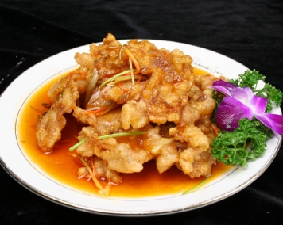
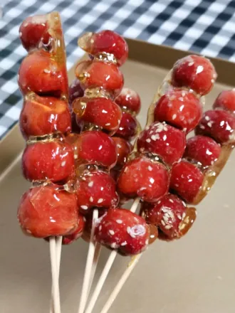

The Hearty World of Dongbei Cuisine
Dongbei (Northeast Chinese) cuisine was born from harsh northern winters and fertile black soils, forging a hearty, comforting, and generous culinary tradition. From tangy fermented cabbage to sizzling braises and family-style platters, it warms every soul.


Signature Masterpieces
Suancai (Northeastern Pickled Cabbage)
Naturally fermented Chinese cabbage with a mouthwatering tartness, essential for slow-cooked pork belly stews, hotpots, and dumplings.
 Guobaorou (Crispy Sweet & Sour Pork)
Guobaorou (Crispy Sweet & Sour Pork)
Thin slices of tender pork tenderloin clad in potato starch, fried to blistered crispness, and glazed in sweet vinegar syrup.

Dongbei Luandun (Harvest Stew)A generous stew of pork ribs, potatoes, sweet corn, green beans, eggplant, and glassy sweet potato noodles simmered in rich soybean gravy.
 Di San Xian (Three Earthly Delicacies)
Di San Xian (Three Earthly Delicacies)Stir-fried potato wedges, purple eggplant, and crisp bell peppers in a savory garlic-soy sauce. Tender, glossy, and heartwarming.
 Dongbei Da La Pi (Jelly Sheet Noodles)
Dongbei Da La Pi (Jelly Sheet Noodles)Wide, chewy transparent noodles made from potato starch, tossed cold with cucumber ribbons, garlic, and velvety sesame sauce.
Tanghulu (Candied Hawthorn Skewers)
Crimson mountain hawthorn berries dipped in glistening, crackling rock sugar glaze. A quintessential crisp, tart-sweet winter street snack.

Basi Digua (Caramel Pull-String Sweet Potato)Crisp fried sweet potato cubes coated in molten caramelized sugar that pulls into golden threads, hardening into brittle glass upon dipping in water.

Flavor Profile & Northern Character
Dongbei flavors are savory, aromatic, and deeply comforting, characterized by generous garlic seasoning, fermented soybean paste, and slow-simmered broths designed to combat subzero winters.
Culinary History & Multicultural Roots
Northeastern cuisine harmoniously blends Qing imperial techniques (carried by Emperor 溥仪's chefs) with indigenous Manchu forest traditions, Korean-ethnic cold noodles, and Russian baking influences.
Iconic Street Food Favorites
Kao Leng Mian (Grilled Cold Noodles)
Rolled noodle sheets fried on a griddle with eggs, scallions, cilantro, and sweet chili glaze—a legendary campus street snack.

Laohu Cai (Tiger Salad)
A zesty raw slaw of fresh coriander, fiery green chilies, and scallions tossed with sesame oil and vinegar.

Grilled Pork Skin Skewers
Collagen-rich pork skin tenderized and charred over coals, finished with cumin and crushed chili.